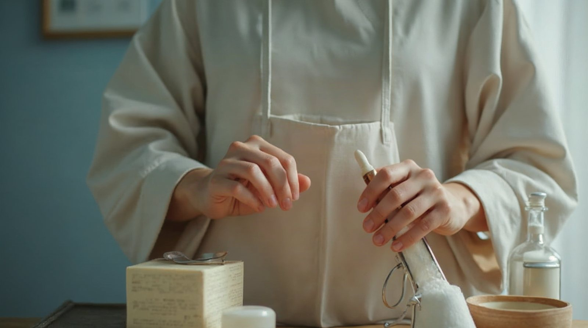

이종호 한의사 감수좋은꿈참사랑한의원 대표원장 (한의사 면허번호 19769)발행 2026-11-25 · 수정 2026-11-25
이 글의 차례
진료실 불빛이 조금 낮아지고, 어깨에 차가운 젤이 닿습니다. 옆 모니터에 회색 무늬가 일렁입니다. 하얀 선이 굽이치고, 검은 틈이 보였다가 사라지고, 결 같은 것이 스쳐 지나갑니다. 설명을 듣고는 있는데 솔직히 어디가 어디인지 잘 모르겠습니다. 고개를 끄덕이면서도 마음 한편에서는 이런 생각이 듭니다. 저기에 뭐가 보이면 큰일인 걸까.
아무것도 안 보이면, 내가 괜히 아프다고 한 걸까.
진료실에서 이런 말씀을 자주 듣습니다. "원장님, 저 하얀 게 뭐예요? 나쁜 거예요?" 화면은 보이는데 읽는 법을 모르니 불안한 게 당연합니다. 몇 주째 아픈 어깨를 안고 오셨는데 알아보기 어려운 그림 앞에서 더 막막해지셨다면, 그건 설명하는 제 몫이 덜 된 것입니다.
그래서 오늘은 그 회색 화면을 어떻게 읽는지, 제가 그 화면에서 무엇을 찾는지 천천히 말씀드려 보려 합니다.
초음파는 피부 아래의 힘줄과 근육, 관절 주변을 실시간으로 비춰 보는 방법입니다. 가장 큰 특징은 움직이면서 함께 볼 수 있다는 점입니다. 저는 그 화면에서 아픈 부위의 힘줄과 근육, 관절 주변 조직의 모양과 움직임을 보고, 누르면 아픈 지점이 화면 속 어느 구조와 겹치는지 맞춰 봅니다.
다만 뼈 속이나 깊은 구조는 잘 보이지 않아서, 그런 부분은 X선이나 MRI 같은 다른 검사가 필요할 수 있습니다.
회색 화면은 이렇게 읽습니다
초음파는 몸속으로 보낸 소리가 되돌아오는 정도를 밝기로 바꿔 보여 줍니다. 소리를 많이 되돌려 보내는 곳은 하얗게, 거의 되돌려 보내지 않는 곳은 검게 보입니다. 이 원리 하나만 기억하셔도 화면이 조금 덜 낯설어집니다.
화면의 맨 위가 피부 쪽이고, 아래로 내려갈수록 깊은 곳입니다. 화면 가장자리의 눈금과 작은 숫자는 깊이 같은 화면 설정을 표시하는 것이라, 읽지 못하셔도 괜찮습니다. 피부 바로 아래에는 지방층이 있고, 그 아래로 근육이 이어집니다. 근육은 대체로 어두운 바탕에 가는 밝은 결이 섞인 모습으로 보입니다.
힘줄은 가는 결이 나란히 이어진 줄무늬처럼 보이는 경우가 많습니다. 뼈의 표면은 아주 밝은 선으로 나타나고, 그 아래는 소리가 지나가지 못해 그림자처럼 어둡게 남습니다. 초음파로 뼈 속을 볼 수 없는 이유가 여기에 있습니다. 물이 고인 곳은 검게 비어 보이는 경우가 많아서, 관절 주변이나 힘줄 둘레에 물이 차 있는지 살피는 단서가 됩니다.
하나 덧붙이면, 같은 힘줄도 탐촉자를 대는 각도에 따라 밝기가 달라 보일 수 있습니다. 제가 화면을 보며 탐촉자를 조금씩 기울이고 돌려 보는 것은 그 때문입니다. 한 장면만 보고 판단하지 않으려는 것이지요.
초음파를 보는 동안은 이렇습니다
초음파는 볼 부위에 따라 누워서, 혹은 앉아서 봅니다. 젤이 피부에 닿는 순간 조금 차갑게 느껴질 수 있습니다. 탐촉자를 대고 천천히 움직이면서 화면을 보고, 아픈 자리를 찾을 때는 일부러 살짝 눌러 보기 때문에 그 순간 잠깐 불편하실 수 있습니다. 참기 어렵다면 바로 말씀해 주세요. 누르는 힘을 줄이거나 자세를 바꿉니다.
끝나면 젤을 닦아 드리는데, 남은 젤은 물로 잘 씻기는 편이라 집에 가서 미지근한 물로 한 번 더 씻어 내시면 됩니다.
제가 그 화면에서 찾는 것
먼저 아픈 자리와 화면의 짝을 맞춥니다. 아픈 지점을 손가락으로 짚어 달라고 부탁드리고, 탐촉자로 그 자리를 살짝 눌러 가장 아픈 곳이 화면의 어느 구조와 겹치는지 봅니다. 말로 설명하기 어려웠던 불편이 화면 위에서 한 점으로 모이는 순간이 있습니다. 그때부터는 이야기가 훨씬 쉬워집니다.
다음은 움직임입니다. 어깨가 아파 오신 분이라면 팔을 천천히 들고 내리는 동안 힘줄이 어떻게 미끄러지는지, 어디에서 걸리는지를 함께 봅니다. 가만히 있을 때는 멀쩡해 보이다가 움직일 때만 드러나는 것들이 있습니다.
그리고 반대쪽입니다. 아프지 않은 쪽을 같은 자세, 같은 각도로 나란히 비춰 보면 차이가 더 잘 보이는 경우가 있습니다. 사람마다 원래 생김새가 조금씩 다르기 때문에, 그분의 반대쪽이 가장 좋은 비교 대상이 됩니다. 반대쪽도 드러내기 쉬운 옷을 입고 오시라고 부탁드리는 이유입니다.
마지막은 다음 방문입니다. 처음 본 위치와 자세를 기록해 두었다가, 다음에 같은 자리를 다시 보며 달라진 점을 확인합니다. 같은 위치, 같은 자세로 비교해야 의미가 있습니다. 화면에서 본 모습은 침·약침·추나·체외충격파 가운데 무엇을 쓸지 정할 때도 참고가 됩니다.
약침이 필요하다고 판단되면 화면을 보며 얕은 곳과 깊은 곳을 나누어, 어디에 놓으려는지 설명드리기도 합니다.
왜 화면만으로는 다 알 수 없을까요
초음파에서 별다른 변화가 보이지 않아도 통증이 없는 것은 아닙니다. 이 말씀은 꼭 드리고 싶습니다. 아픈데 화면이 깨끗하다는 말을 들으면 내가 예민한가 싶어 마음이 상하시는 분이 계신데, 그렇지 않습니다. 반대로 화면에 변화가 보여도 지금의 통증과 직접 관련이 없는 경우도 있습니다. 나이가 들면서 생긴 흔적이 아프지 않은 채로 남아 있기도 하니까요.
그래서 저는 화면과 증상, 눌렀을 때의 반응을 함께 놓고 판단합니다. 화면이 깨끗하다는 말은 아플 이유가 없다는 뜻이 아니라, 초음파로 보이는 범위 안에서는 눈에 띄는 변화가 없다는 뜻으로 들어 주세요.
초음파가 볼 수 없는 영역도 분명히 있습니다. 뼈 속, 디스크, 깊은 곳의 구조, 신경계 질환은 초음파로 평가하기 어렵습니다. 한의원의 초음파는 영상의학과 정밀 검사를 대신하지 않습니다. 이런 부분이 의심되면 영상 검사가 가능한 의료기관을 안내해 드리고, 결과지를 가져오시면 이어서 참고합니다.
MRI 결과도 판독지를 참고하며, 영상 판독은 영상의학과 판독 내용을 기준으로 합니다. 다른 병원에서 들은 설명과 오늘 초음파 이야기가 달라 헷갈리신다면 그 자리에서 말씀해 주세요. 무엇이 같고 무엇이 다른지 함께 짚어 보겠습니다.
이런 분들을 자주 뵙습니다
하루 종일 마우스를 쓰는 직장인이 손목 바깥쪽이 아파 오시는 경우가 많습니다. 손목을 천천히 움직이며 힘줄이 지나가는 모습을 보고, 반대쪽 손목과 나란히 비교합니다. 같은 자리 통증이 되풀이되는 분이라면 화면을 보며 가장 예민한 지점을 함께 찾습니다.
아이를 안아 올리느라 엄지 쪽 손목이 시큰한 분들도 많습니다. 엄지를 움직일 때 손목 쪽 힘줄이 어떻게 지나가는지 화면으로 함께 보고, 아이를 안을 때 손목을 덜 꺾는 자세를 같이 찾아봅니다.
계단을 내려갈 때 무릎 앞이 시큰하다는 어르신들도 자주 뵙습니다. 무릎을 굽혔다 펴며 무릎뼈 위아래의 힘줄과 그 주변에 물이 고인 곳은 없는지 살피고, 관절 위쪽 근육도 함께 보여 드립니다.
허리가 아프고 다리까지 저린 수험생이 오시기도 합니다. 이럴 때는 화면을 켜기 전에 먼저 말씀드립니다. 디스크와 신경은 초음파로 보기 어려워서 영상 검사가 가능한 의료기관 확인이 먼저일 수 있다고요. 필요한 검사를 먼저 받으시도록 안내하는 것도 제 일입니다.
오시기 전에 해 두시면 좋은 것
초음파를 볼 부위가 쉽게 드러나는 옷이면 됩니다. 어깨라면 앞이 열리는 셔츠, 무릎이라면 걷어 올리기 쉬운 바지가 좋고, 반대쪽도 함께 드러낼 수 있으면 더 좋습니다. 검사 전날 밤에는 그 부위에 붙인 파스를 떼어 피부를 쉬게 해 주세요. 파스를 붙인 채로는 탐촉자를 댈 수 없고, 막 뗀 자리는 붉고 예민해서 젤을 닦을 때 따가울 수 있습니다.
당일 아침에는 볼 부위에 보습 크림이나 오일을 바르지 않고, 핫팩도 그 자리에는 대지 않고 오시는 편이 좋습니다. 데워진 피부는 붉어져 있어서 붓기나 열감을 살필 때 헷갈림을 줄 수 있습니다.
며칠 동안 아픈 동작과 시간대를 메모해 두시면 큰 도움이 됩니다. 아픈 동작을 휴대폰으로 짧게 찍어 오셔도 좋습니다. 다른 병원에서 받은 영상 판독지가 있으면 챙겨 오시고, 진통제를 드셨다면 먹은 시각을 알려 주세요. 약 기운이 남아 있으면 눌렀을 때 아픈 정도가 평소와 다를 수 있습니다.
그리고 오시기 전에 이것만 스스로 물어보세요. 가장 아픈 지점을 손가락 하나로 짚을 수 있는가? 어떤 동작에서 아픈지 말할 수 있는가? 아프지 않은 쪽과 비교해 다른 점이 있는가? 이 세 가지만 떠올려 오셔도 화면을 함께 보는 시간이 훨씬 알차집니다.
화면 앞에서 이렇게 물어보셔도 됩니다
초음파를 보는 동안 궁금한 것이 생기면 그 자리에서 바로 물어보세요. 무엇을 물어야 할지 모르겠다면 이런 질문으로 시작하시면 됩니다. 지금 화면에 보이는 것이 근육인가요, 힘줄인가요? 아프지 않은 쪽과 무엇이 다른가요? 이것이 지금 아픈 것과 이어지는 건가요, 아니면 원래 있던 모습인가요? 그래서 오늘 집에서는 무엇을 조심하면 되나요?
다음에는 언제, 어떤 자세로 다시 보나요?
이 다섯 가지에 대한 답을 듣고 나가시면, 화면에서 본 것이 내 생활과 어떻게 이어지는지가 훨씬 또렷해집니다. 들은 내용을 휴대폰 메모에 한두 줄 남겨 두시면 다음 진료 때 이야기를 이어 가기도 쉽습니다.
얼마나 지켜보고, 언제 진료를 받을까요
가벼운 삠이나 무리한 뒤의 통증은 며칠 쉬면서 붓기와 아픈 동작이 줄어드는지 지켜볼 수 있습니다. 그동안은 아픈 동작을 무리해서 되풀이하지 마시고, 붓기가 있으면 쉬면서 그 부위를 심장보다 조금 높게 두세요. 2~3주가 지나도 같은 동작에서 계속 아프거나 붓기가 되풀이된다면 진료를 받아 보세요.
한 번 초음파를 본 뒤 다시 볼지는 증상의 흐름을 보며 정합니다.
다음과 같은 경우에는 기다리지 말고 먼저 확인을 받으세요.
- 넘어지거나 부딪힌 뒤 붓기와 멍이 심하거나 체중을 실을 수 없는 경우
- 팔다리 힘이 빠지거나 감각이 둔해진 경우
- 관절이 붉고 뜨거우며 열이 나는 경우
다친 직후 뼈 손상이 의심되면 영상 검사가 가능한 의료기관이나 가까운 응급실에서 바로 확인을 받으세요. 복용 중인 약은 처방한 의사와 상의 없이 줄이거나 끊지 않습니다.

좋은꿈참사랑한의원에 처음 오시면
처음 오시면 저는 어느 동작에서 가장 아픈지, 언제 무엇을 하다 시작되었는지, 다친 기억이 있는지, 최근 X선이나 MRI를 찍은 적이 있는지부터 여쭙니다. 하루 중 오래 하는 자세와 잠, 일하는 모습도 함께 듣습니다. 처음 오신 날은 진찰 시간이 있어 다시 오실 때보다 조금 오래 걸릴 수 있습니다.
그다음 양손의 맥을 짚고 혀를 살펴 몸 전체의 상태를 봅니다. 이어서 아픈 자리를 눌러 보고 움직여 보며, 화면으로 확인할 필요가 있다고 판단될 때 초음파를 댑니다. 젤을 바르고 탐촉자를 대는 방식이라 대개 아프지 않지만, 누르는 지점이 불편하면 바로 말씀해 주세요.
아픈 쪽과 반대쪽, 쉬고 있을 때와 움직일 때를 나누어 함께 보고, 본 내용을 바탕으로 지금 맞는 방법과 순서를 설명해 드립니다. 검사 시간은 부위와 상태에 따라 달라서, 대략의 시간이 궁금하시면 방문 전 전화로 여쭤 보셔도 됩니다.
진료를 마치기 전에는 집에서 조심할 동작을 알려 드립니다. 다시 오시면 지난번 아팠던 동작부터 이어서 여쭙고, 필요하면 같은 위치를 같은 자세로 다시 비교합니다. 가장 아픈 동작과 지점, 통증이 시작된 시기와 계기, 드시는 진통제, 아프지 않은 쪽과 비교해 다른 점을 적어 오시면 그 비교가 훨씬 쉬워집니다.
마치며
알 수 없는 그림 앞에 서면 누구나 불안해집니다. 몇 주씩 아픈 곳을 안고 지내 오셨다면 더 그렇겠지요. 화면은 제가 혼자 보려고 켜는 것이 아니라 함께 보려고 켜는 것입니다. 모르는 무늬가 나오면 언제든 물어보세요. 이게 무엇인지, 그래서 오늘은 무엇을 조심하면 되는지. 그 질문에 쉬운 말로 답하는 것까지가 초음파를 보는 일이라고 저는 생각합니다.
다음에 오시면 지난번 화면에서 함께 짚어 본 그 자리가 요즘 어떤 동작에서 아픈지, 그것부터 여쭙겠습니다.
함께 읽으면 좋은 글
- 초음파 검사를 받을 때 왜 반대쪽 부위와 비교해서 보나요?
- 초음파 결과가 정상이라는데 계속 아픈 것은 왜 그런가요?
- 초음파로 디스크나 뼈 속 상태도 볼 수 있나요?

회색 화면은 이렇게 읽습니다
- 초음파는 몸속으로 보낸 소리가 되돌아오는 정도를 밝기로 바꿔 보여 줍니다.
- 소리를 많이 되돌려 보내는 곳은 하얗게, 거의 되돌려 보내지 않는 곳은 검게 보입니다.
초음파를 보는 동안은 이렇습니다
- 초음파는 볼 부위에 따라 누워서, 혹은 앉아서 봅니다.
- 젤이 피부에 닿는 순간 조금 차갑게 느껴질 수 있습니다.
제가 그 화면에서 찾는 것
- 먼저 아픈 자리와 화면의 짝을 맞춥니다.
- 아픈 지점을 손가락으로 짚어 달라고 부탁드리고, 탐촉자로 그 자리를 살짝 눌러 가장…
왜 화면만으로는 다 알 수 없을까요
- 초음파에서 별다른 변화가 보이지 않아도 통증이 없는 것은 아닙니다.
- 이 말씀은 꼭 드리고 싶습니다.
자주 묻는 질문
초음파만으로 다 알 수 있나요?
아닙니다. 뼈 속이나 깊은 구조는 X선·MRI 등이 필요할 수 있습니다.
아픈가요?
젤을 바르고 탐촉자를 대는 방식이라 대개 아프지 않습니다. 누르는 지점이 불편하면 말씀해 주세요.
MRI 결과도 봐 주시나요?
판독지를 참고하며, 영상 판독은 영상의학과 판독 내용을 기준으로 합니다.
검사 시간은 얼마나 걸리나요?
부위와 상태에 따라 다르며, 방문 전 전화로 대략의 시간을 여쭤 보실 수 있습니다.
화면에 하얗게 보이는 것은 나쁜 건가요?
하얗게 보인다는 것은 소리를 많이 되돌려 보내는 조직이라는 뜻일 뿐, 그 자체로 좋고 나쁨을 말하지는 않습니다. 궁금한 무늬가 있으면 그 자리에서 물어봐 주세요.
좋은꿈참사랑한의원은 재진 때 지난번 이야기부터 이어서 여쭙니다. 진료시간과 예약은 오시는 길에서 확인하세요.
어디서 상담받을 수 있나요?
좋은꿈참사랑한의원은 서울 동작구 만양로2길 2 신성빌딩 3층·5층(서울 동작구 상도동, 7호선 상도역 3번 출구 근처)에 있습니다. 한의사 3명(이종호 대표원장, 조영기 수석진료원장, 정원영 진료원장)이 진료합니다. 진료시간은 평일 09:30~20:00(점심 13:00~14:00), 토·일·공휴일 09:30~15:00이며, 방문 전 전화로 확인을 권합니다. 예약은 네이버 예약, 카카오톡 상담, 전화 02-815-7510로 받습니다.
이 글은 일반적인 건강 정보이며 개인의 진단이나 치료를 대신하지 않습니다. 증상이 있거나 복용 중인 약이 있다면 진료를 통해 확인하세요. 치료 효과는 개인마다 다를 수 있습니다.
작성 기준: 일반적으로 알려져 있는 건강 정보를 참고해 정리했습니다(대표원장 감수). 증상 기록은 1~2주 동안 하루 1회, 비슷한 시간에 적어 오시면 지난 상태와 비교하기 쉽습니다.